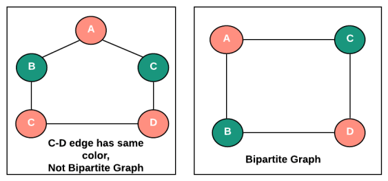
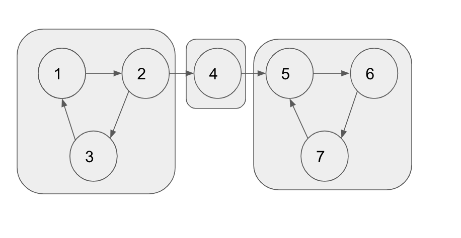

Graph Traversal
BFS
class Solution {
public:
vector<int>bfsOfGraph(int V, vector<int> adj[]){
vector<int> bfs;
vector<int> vis(V, 0);
queue<int> q;
q.push(0);
vis[0] = 1;
while(!q.empty()) {
int node = q.front();
q.pop();
bfs.push_back(node);
for(auto it : adj[node]) {
if(!vis[it]) {
q.push(it);
vis[it] = 1;
}
}
}
return bfs;
}
};
DFS
class Solution {
void dfs(int node, vector<int> &vis, vector<int> adj[], vector<int> &storeDfs) {
storeDfs.push_back(node); //Storing to print output later
vis[node] = 1;
for(auto it : adj[node]) {
if(!vis[it]) {
dfs(it, vis, adj, storeDfs);
}
}
}
public:
//DFS of all disconnected graphs
vector<int>dfsOfGraph(int V, vector<int> adj[]){
vector<int> storeDfs;
vector<int> vis(V+1, 0);
for(int i = 1;i<=V;i++) {
if(!vis[i]) dfs(i, vis, adj, storeDfs);
}
return storeDfs;
}
};
Cycle detection in Undirected Graph using BFS
Do BFS traversal while maintaining parent in queue. If any node is already visited which is not parent, then there is a cycle.
class Solution {
public:
bool checkForCycle(int s, int V, vector<int> adj[], vector<int>& visited)
{
// Create a queue for BFS
queue<pair<int,int>> q; //pair<node,parent>
visited[s] = true;
q.push({s, -1});
while (!q.empty()) {
int node = q.front().first;
int par = q.front().second;
q.pop();
for (auto it : adj[node]) {
if (!visited[it]) {
visited[it] = true;
q.push({it, node});
}
else if (par != it) //Important logic for cycle detection
return true;
}
}
return false;
}
public:
bool isCycle(int V, vector<int>adj[]){
vector<int> vis(V, 0);
//Traverse disconnected components
for(int i = 0;i<V;i++) {
if(!vis[i]) {
if(checkForCycle(i, V, adj, vis)) return true;
}
}
return false;
}
};
Cycle Detection in Undirected Graph using DFS
Cycle present, If any node other than previous node is already visited.
class Solution {
public:
bool checkForCycle(int node, int parent, vector<int> &vis, vector<int> adj[]) {
vis[node] = 1;
for(auto it: adj[node]) {
if(!vis[it]) {
if(checkForCycle(it, node, vis, adj))
return true;
}
else if(it!=parent) //Important logic for cycle logic
return true;
}
return false;
}
public:
bool isCycle(int V, vector<int>adj[]){
vector<int> vis(V+1, 0);
for(int i = 0;i<V;i++) {
if(!vis[i]) {
if(checkForCycle(i, -1, vis, adj)) return true;
}
}
return false;
}
};
Bipartite Graph (BFS) | Graph Coloring
Graph that can be colored using 2 colors such that there are no 2 adjacent nodes with same color.

Observation : No odd length cycle = Bipartite Graph
Implementation : BFS Traversal with color array instead of visited array
bool bipartiteBfs(int src, vector<int> adj[], int color[]) {
queue<int>q;
q.push(src);
color[src] = 1;
while(!q.empty()) {
int node = q.front();
q.pop();
for(auto it : adj[node]) {
if(color[it] == -1) {
color[it] = 1 - color[node];
q.push(it);
} else if(color[it] == color[node]) {
// If already colored(visited) and has same color then return false
return false;
}
}
}
return true;
}
bool checkBipartite(vector<int> adj[], int n) {
int color[n];
memset(color, -1, sizeof color);
for(int i = 0;i<n;i++) {
if(color[i] == -1) {
if(!bipartiteBfs(i, adj, color)) {
return false;
}
}
}
return true;
}
Bipartite Graph (DFS) | Graph Coloring
DFS while maintaining color array instead of visited array.
bool bipartiteDfs(int node, vector<int> adj[], int color[]) {
for(auto it : adj[node]) {
if(color[it] == -1) {
color[it] = 1 - color[node];
if(!bipartiteDfs(it, adj, color)) {
return false;
}
}
// If already colored and has same color then return false
else if(color[it] == color[node]) return false;
}
return true;
}
bool checkBipartite(vector<int> adj[], int n) {
int color[n];
memset(color, -1, sizeof color);
for(int i = 0;i<n;i++) {
if(color[i] == -1) {
color[i] = 1;
if(!bipartiteDfs(i, adj, color)) {
return false;
}
}
}
return true;
}
Cycle Detection in Directed Graph using DFS
Keep 2 arrays
-
vis : maintain overall visited for disconnected components
-
dfsVis : visited in current dfs. (Backtrack while returning) If adjacent node is present in dfsVis then cycle is present.
class Solution {
private:
bool checkCycle(int node, vector<int> adj[], int vis[], int dfsVis[]) {
vis[node] = 1;
dfsVis[node] = 1;
for(auto it : adj[node]) {
if(!vis[it]) {
if(checkCycle(it, adj, vis, dfsVis)) return true;
} else if(dfsVis[it]) {
return true;
}
}
dfsVis[node] = 0;
return false;
}
public:
bool isCyclic(int N, vector<int> adj[]) {
int vis[N], dfsVis[N];
memset(vis, 0, sizeof vis);
memset(dfsVis, 0, sizeof dfsVis);
for(int i = 0;i<N;i++) {
if(!vis[i]) {
// cout << i << endl;
if(checkCycle(i, adj, vis, dfsVis)) {
return true;
}
}
}
return false;
}
};
Topological sort (DFS)
Topological sort: Linear ordering of vertices such that if there is an edge u->v, u appears before v in that ordering.
DFS with auxilliary stack to maintain toposort. Add node to auxilliary stack on completion of dfs call of each node. This way last node will be added to stack first. Popping nodes from stack will give topo sort.
class Solution{
void findTopoSort(int node, vector<int> &vis, stack<int> &st, vector<int> adj[]) {
vis[node] = 1;
for(auto it : adj[node]) {
if(!vis[it]) {
findTopoSort(it, vis, st, adj);
}
}
st.push(node);
}
public:
vector<int> topoSort(int N, vector<int> adj[]) {
stack<int> st;
vector<int> vis(N, 0);
for(int i = 0;i<N;i++) {
if(vis[i] == 0) {
findTopoSort(i, vis, st, adj);
}
}
vector<int> topo;
while(!st.empty()) {
topo.push_back(st.top());
st.pop();
}
return topo;
}
};
Topological Sort (BFS) | Kahn's Algorithm
Setup: Create an indegree vector. Add nodes with indegree 0 to queue.
Loop: Pop front element from queue, and do BFS and decrement indegree on visiting. If indegree becomes 0, add it to queue.
class Solution {
public:
vector<int> topo(int N, vector<int> adj[]) {
queue<int> q;
//create and update indegree vector
vector<int> indegree(N, 0);
for(int i = 0;i<N;i++) {
for(auto it: adj[i]) {
indegree[it]++;
}
}
//Add nodes with indegree 0 to queue
for(int i = 0;i<N;i++) {
if(indegree[i] == 0) {
q.push(i);
}
}
vector<int> topo;
while(!q.empty()) {
int node = q.front();
q.pop();
topo.push_back(node); //update toposort on popping node from queue
for(auto it : adj[node]) {
indegree[it]--;
if(indegree[it] == 0) {
q.push(it);
}
}
}
return topo;
}
};
Cycle Detection in Directed Graph using BFS(Kahn's Algorithm)
Observation: Topological sort is not possible with cyclic graph.
Algo: Try to generate topological sort with above Kahn's algorithm. If successful, then no cycle.
class Solution {
public:
bool isCyclic(int N, vector<int> adj[]) {
queue<int> q;
vector<int> indegree(N, 0);
for(int i = 0;i<N;i++) {
for(auto it: adj[i]) {
indegree[it]++;
}
}
for(int i = 0;i<N;i++) {
if(indegree[i] == 0) {
q.push(i);
}
}
int cnt = 0; //Counter
while(!q.empty()) {
int node = q.front();
q.pop();
cnt++;
for(auto it : adj[node]) {
indegree[it]--;
if(indegree[it] == 0) {
q.push(it);
}
}
}
if(cnt == N) return false; //Cycle check
return true;
}
};
Shortest Path in Undirected Graph with Unit Weights
Initialise distance vector with INT_MAX.
Basically a BFS but add to queue only if current node distance + 1 is less that distance in distance vector i.e. if(dist[node] + 1 < dist[it]).
void BFS(vector<int> adj[], int N, int src)
{
int dist[N];
for(int i = 0;i<N;i++) dist[i] = INT_MAX;
queue<int> q;
dist[src] = 0;
q.push(src);
while(q.empty()==false)
{
int node = q.front();
q.pop();
for(auto it:adj[node]){
if(dist[node] + 1 < dist[it]){
dist[it]=dist[node]+1;
q.push(it);
}
}
}
for(int i = 0;i<N;i++) cout << dist[i] << " ";
}
Shortest Path in weighted Directed Acyclic Graph (DAG)
Get the topo sort.
Initialize distance vector with INT_MAX.
Keep updating distance vector if distance cost is less than dist[node] for each node in topo sort.
void findTopoSort(int node, int vis[], stack<int> &st, vector<pair<int,int>> adj[]) {
vis[node] = 1;
for(auto it : adj[node]) {
if(!vis[it.first]) {
findTopoSort(it.first, vis, st, adj);
}
}
st.push(node);
}
void shortestPath(int src, int N, vector<pair<int,int>> adj[])
{
int vis[N] = {0};
stack<int> st;
for (int i = 0; i < N; i++)
if (!vis[i])
findTopoSort(i, vis, st, adj);
int dist[N];
for (int i = 0; i < N; i++)
dist[i] = 1e9;
dist[src] = 0;
while(!st.empty())
{
int node = st.top();
st.pop();
if (dist[node] != INF) {
for(auto it : adj[node]) {
if(dist[node] + it.second < dist[it.first]) {
dist[it.first] = dist[node] + it.second;
}
}
}
}
for (int i = 0; i < N; i++)
(dist[i] == 1e9)? cout << "INF ": cout << dist[i] << " ";
}
Dijkstra's Algorithm | Shortest Path in Undirected Graphs
Initialize distance vector with INT_MAX.
Add source node to priority_queue(min heap) of
Update distance vector for all adjacent nodes of front popped node from queue.
On updating distance vector (if shorter distance), add to queue.
Note that this does not work for negative edge weights.
Time Complexity = O( ( V + E ) lgV )
priority_queue<pair<int,int>,vector<pair<int,int> >,greater<pair<int,int> > > pq;// min-heap ;
In pair => (dist, node) i.e. dist required to reach node from source
vector<int> distTo(n+1,INT_MAX); // 1-indexed array for calculating shortest paths;
distTo[source] = 0;
pq.push(make_pair(0,source)); // (dist,from)
while( !pq.empty() ){
int dist = pq.top().first;
int prev = pq.top().second;
pq.pop();
vector<pair<int,int> >::iterator it;
for( it = g[prev].begin() ; it != g[prev].end() ; it++){
int next = it->first;
int nextDist = it->second;
if( distTo[next] > distTo[prev] + nextDist){
distTo[next] = distTo[prev] + nextDist;
pq.push(make_pair(distTo[next], next));
}
}
}
Minimum Spanning Tree
Minimum spanning tree is the spanning tree where the cost is minimum among all the spanning trees. There also can be many minimum spanning trees. The cost of the spanning tree is the sum of the weights of all the edges in the tree. There can be many spanning trees.
Prims Algorithm | Minimum Spanning Tree
Start with single node. Pick up edges with minimum weight and expand tree. Keep on doing this until you get N nodes and N-1 edges.
Maintain 3 arrays.
-
Key: Maintains weight to reach node
-
MST: Indicates that node is included in MST
-
Parent: Output (To form MST graph at the end)
int parent[N];
int key[N]; //index i represents node i, value key[i] represents distance to node i from mst
bool mstSet[N];
for (int i = 0; i < N; i++)
key[i] = INT_MAX, mstSet[i] = false;
key[0] = 0;
parent[0] = -1;
int ansWeight = 0;
for (int count = 0; count < N - 1; count++)
{
int mini = INT_MAX, u;
for (int v = 0; v < N; v++)
if (mstSet[v] == false && key[v] < mini)
mini = key[v], u = v;
mstSet[u] = true;
for (auto it : adj[u]) {
int v = it.first;
int weight = it.second;
if (mstSet[v] == false && weight < key[v])
parent[v] = u, key[v] = weight;
}
}
Disjoint set and Union, Path Compression
Kruskal's algorithm for MST
Sort based on edge weights and
add nodes connected to least weight edge if parent of nodes of that edge are different i.e. node is not already included in mst.
struct node {
int u;
int v;
int wt;
node(int first, int second, int weight) {
u = first;
v = second;
wt = weight;
}
};
bool comp(node a, node b) {
return a.wt < b.wt;
}
int findPar(int u, vector<int> &parent) {
if(u == parent[u]) return u;
return parent[u] = findPar(parent[u], parent);
}
void unionn(int u, int v, vector<int> &parent, vector<int> &rank) {
u = findPar(u, parent);
v = findPar(v, parent);
if(rank[u] < rank[v]) {
parent[u] = v;
}
else if(rank[v] < rank[u]) {
parent[v] = u;
}
else {
parent[v] = u;
rank[u]++;
}
}
int main(){
int N,m;
cin >> N >> m;
vector<node> edges;
for(int i = 0;i<m;i++) {
int u, v, wt;
cin >> u >> v >> wt;
edges.push_back(node(u, v, wt));
}
sort(edges.begin(), edges.end(), comp);
vector<int> parent(N);
for(int i = 0;i<N;i++)
parent[i] = i;
vector<int> rank(N, 0);
int cost = 0;
vector<pair<int,int>> mst;
for(auto it : edges) {
if(findPar(it.v, parent) != findPar(it.u, parent)) {
cost += it.wt;
mst.push_back({it.u, it.v});
unionn(it.u, it.v, parent, rank);
}
}
cout << cost << endl;
for(auto it : mst) cout << it.first << " - " << it.second << endl;
return 0;
}
Kosaraju's Algorithm (Strongly connected components)

toposort and traverse from end.
In above diagram, toposort could be : 1,2,3,4,5,6,7
DFS from from end would result in giving strongly connected components as there is no reverse edge from 1 scc to other scc.
DFS from 7 can only traverse 7,6,5. But can't go to 4 as there is no edge from that scc to other scc.
Bellman Ford (shortest path algorithm)
Relax all edges n-1 times.
Relaxation -> update dist[v] if dist[u]+weight(u,v) < dist[v]
Works with negative edge weights
struct node {
int u;
int v;
int wt;
node(int first, int second, int weight) {
u = first;
v = second;
wt = weight;
}
};
int main(){
int N,m;
cin >> N >> m;
vector<node> edges;
for(int i = 0;i<m;i++) {
int u, v, wt;
cin >> u >> v >> wt;
edges.push_back(node(u, v, wt));
}
int src;
cin >> src;
int inf = 10000000;
vector<int> dist(N, inf); //maintains shortest distance from source
dist[src] = 0;
for(int i = 1;i<=N-1;i++) {
for(auto it: edges) {
if(dist[it.u] + it.wt < dist[it.v]) {
dist[it.v] = dist[it.u] + it.wt;
}
}
}
int fl = 0;
for(auto it: edges) {
if(dist[it.u] + it.wt < dist[it.v]) {
cout << "Negative Cycle";
fl = 1;
break;
}
}
if(!fl) {
for(int i = 0;i<N;i++) {
cout << i << " " << dist[i] << endl;
}
}
return 0;
}
Floyd Warshall Algorithm (All pairs shortest path)
This is a dp problem
K is node allowed to be included in path
for k in 1,n
{
(update 2d DP )
}
2d DP: dist[i][j] = min(dist[i][j], dist[i][k]+dist[k][j])
Time complexity : O(n^3)
// Number of vertices in the graph
#define V 4
// Solves the all-pairs shortest path
// problem using Floyd Warshall algorithm
void floydWarshall(int graph[][V])
{
/* dist[][] will be the output matrix
that will finally have the shortest
distances between every pair of vertices */
int dist[V][V], i, j, k;
/* Initialize the solution matrix same
as input graph matrix. Or we can say
the initial values of shortest distances
are based on shortest paths considering
no intermediate vertex. */
for (i = 0; i < V; i++)
for (j = 0; j < V; j++)
dist[i][j] = graph[i][j];
/* Add all vertices one by one to
the set of intermediate vertices.
---> Before start of an iteration,
we have shortest distances between all
pairs of vertices such that the
shortest distances consider only the
vertices in set {0, 1, 2, .. k-1} as
intermediate vertices.
----> After the end of an iteration,
vertex no. k is added to the set of
intermediate vertices and the set becomes {0, 1, 2, ..
k} */
for (k = 0; k < V; k++) {
// Pick all vertices as source one by one
for (i = 0; i < V; i++) {
// Pick all vertices as destination for the
// above picked source
for (j = 0; j < V; j++) {
// If vertex k is on the shortest path from
// i to j, then update the value of
// dist[i][j]
if (dist[i][j] > (dist[i][k] + dist[k][j])
&& (dist[k][j] != INF
&& dist[i][k] != INF))
dist[i][j] = dist[i][k] + dist[k][j];
}
}
}
}